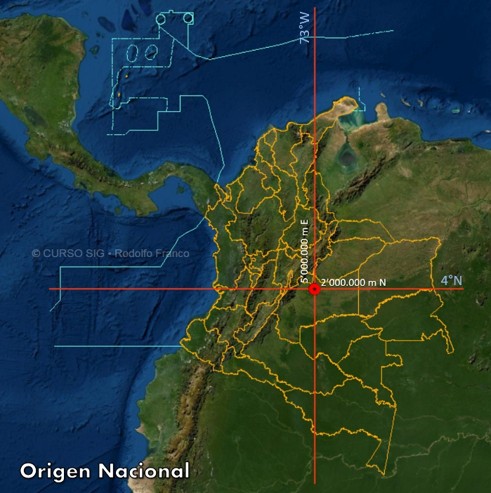
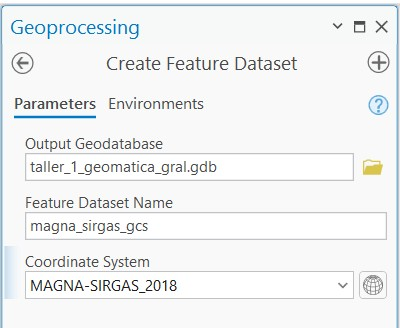
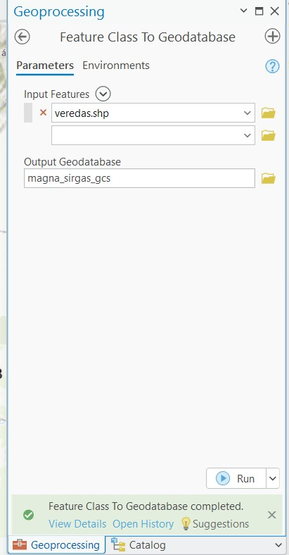

Taller 1 – Sistemas de Coordenadas en Colombia
1 Contexto General
Los sistemas de referencia espacial permiten ubicar con precisión cualquier punto sobre la superficie terrestre.
En Colombia, la evolución de los sistemas geodésicos ha pasado del datum Bogotá 1975 al marco oficial actual MAGNA-SIRGAS.
La correcta identificación del sistema de coordenadas es fundamental para evitar errores en cálculos de distancia, área y superposición espacial.
Trabajar con sistemas de referencia incorrectos puede generar desplazamientos espaciales de varios metros.
2 Procedimientos realizados
Se utilizó ArcGIS Pro para realizar tareas relacionadas con la definición, transformación y conversión entre sistemas de coordenadas.
Los datos fueron suministrados en la carpeta data, archivo coordenadas.zip.
Se creó un proyecto nuevo y se vinculó la ruta de datos al mismo.
En el catálogo se verificaron las propiedades de todos los archivos para determinar si tenían sistema de coordenadas asignado.
2.1 Verificación del Shapefile cundinamarca.shp
Se evidenció que cundinamarca.shp no tenía sistema definido, ya que no existía el archivo .prj.
Un Shapefile está compuesto por:
.shp→ geometría
.shx→ índice
.dbf→ atributos
.prj→ sistema de coordenadas
.cpg→ codificación (opcional)
La ausencia del .prj implica que el sistema no estaba documentado.
2.2 Definir el sistema de coordenadas para una capa sin sistema definido
Se utilizó la herramienta:
Data Management Tools → Projections and Transformations → Define Projection
- Input Dataset:
Cundinamarca.shp - Coordinate System: GCS_Bogota
- Ejecutar con “Run”
2.2.1 Sistema GCS_Bogota
- Tipo: Geográfico
- Datum: Bogotá 1975
- Elipsoide: International 1924
- EPSG: 4218
No está relacionado con MAGNA-SIRGAS ni con ARENA.
Es un sistema geográfico basado en datum local antiguo.
2.3 Definir el sistema de coordenadas para el Shapefile veredas.shp
Para veredas.shp se verificó:
- Tipo: Proyectado
- Datum: Bogotá 1975
- Proyección: Transverse Mercator
- EPSG: 21891
No pertenece a los seis orígenes oficiales de MAGNA-SIRGAS.
Corresponde al sistema plano antiguo cuyo origen estaba definido en Bogotá.
2.3.1 Análisis
El sistema GCS_Bogota es un sistema de coordenadas geográfico basado en el datum Bogotá 1975.
No corresponde al marco oficial actual del país.
No está relacionado con MAGNA-SIRGAS ni con el sistema ARENA, ya que estos utilizan el datum moderno adoptado oficialmente en Colombia.
Al estar basado en un datum antiguo, puede presentar diferencias significativas frente a MAGNA-SIRGAS.
2.4 Sistema Colombia Bogota Zone
2.4.1 Propiedades
- Tipo: Proyectado
- Datum base: Bogotá 1975
- Proyección: Transverse Mercator
- Código EPSG: 21891
2.4.1.1 Análisis
El sistema Colombia Bogota Zone es un sistema proyectado derivado del datum Bogotá 1975.
No pertenece a los seis orígenes oficiales definidos bajo MAGNA-SIRGAS.
Corresponde al sistema plano antiguo cuyo origen se encontraba en Bogotá.
Este sistema fue ampliamente utilizado antes de la adopción oficial de MAGNA-SIRGAS.
2.5 Sistemas Oficiales en Colombia
Actualmente, el sistema oficial adoptado en Colombia es MAGNA-SIRGAS, el cual inicialmente definía seis orígenes cartográficos para el territorio continental e insular.
Sin embargo, a partir del año 2020 Colombia adoptó un Origen Nacional único, con el fin de:
- Garantizar continuidad espacial
- Eliminar ambigüedades entre zonas
- Simplificar la gestión cartográfica
- Facilitar la interoperabilidad
- Optimizar tiempos y costos en tratamiento de datos geográficos
Este cambio fue oficializado mediante la Resolución IGAC 471 del 14 de mayo de 2020.
2.5.1 MAGNA-SIRGAS 2018 / Origen Nacional
- Tipo: Proyectado
- EPSG: 9377
- Proyección: Transversa de Mercator
- Elipsoide: GRS80
2.5.1.1 Parámetros oficiales
| Parámetro | Valor |
|---|---|
| Latitud de origen | 4° N |
| Longitud de origen | 73° W |
| Falso Este | 5,000,000 m |
| Falso Norte | 2,000,000 m |
| Factor de escala | 0.9992 |
| Unidades | Metros |
El origen se localiza cerca de Puerto López (Meta).
El falso Este y falso Norte fueron definidos para evitar valores negativos y diferenciar claramente coordenadas Norte y Este.
2.5.1.2 Imagen de referencia

Fuente: Rodolfo Franco Web – MAGNA-SIRGAS Origen Nacional.
Disponible en: https://rodolfofrancoweb.com/sig/proyecciones_y_sistemas_de_coordenadas/magna-sirgas-origen-nacional/
El Origen Nacional reemplaza progresivamente los sistemas antiguos basados en Bogotá 1975.
2.5.2 Tabla de Sistemas de Coordenadas en Colombia
| Nombre del Sistema | Tipo | Datum | Proyección | EPSG |
|---|---|---|---|---|
| WGS 84 | Geográfico | WGS84 | — | 4326 |
| WGS 84 / Web Mercator | Proyectado | WGS84 | Mercator | 3857 |
| MAGNA-SIRGAS | Geográfico | MAGNA-SIRGAS | — | 4686 |
| MAGNA-SIRGAS 2018 / Origen Nacional | Proyectado | MAGNA-SIRGAS | Transversa Mercator | 9377 |
| MAGNA-SIRGAS / Colombia Far West zone | Proyectado | MAGNA-SIRGAS | Transversa Mercator | 3114 |
| MAGNA-SIRGAS / Colombia West zone | Proyectado | MAGNA-SIRGAS | Transversa Mercator | 3115 |
| MAGNA-SIRGAS / Colombia Bogota zone | Proyectado | MAGNA-SIRGAS | Transversa Mercator | 3116 |
| MAGNA-SIRGAS / Colombia East Central zone | Proyectado | MAGNA-SIRGAS | Transversa Mercator | 3117 |
| MAGNA-SIRGAS / Colombia East zone | Proyectado | MAGNA-SIRGAS | Transversa Mercator | 3118 |
| Bogota 1975 | Geográfico | Bogotá 1975 | — | 4218 |
| Bogota 1975 / Colombia West zone | Proyectado | Bogotá 1975 | Transversa Mercator | 21896 |
| Bogota 1975 / Colombia Bogota zone | Proyectado | Bogotá 1975 | Transversa Mercator | 21897 |
| Bogota 1975 / Colombia East Central zone | Proyectado | Bogotá 1975 | Transversa Mercator | 21898 |
| Bogota 1975 / Colombia East zone | Proyectado | Bogotá 1975 | Transversa Mercator | 21899 |
| WGS 84 / UTM 17N | Proyectado | WGS84 | UTM | 32617 |
| WGS 84 / UTM 18N | Proyectado | WGS84 | UTM | 32618 |
| WGS 84 / UTM 19N | Proyectado | WGS84 | UTM | 32619 |
| WGS 84 / UTM 17S | Proyectado | WGS84 | UTM | 32717 |
| WGS 84 / UTM 18S | Proyectado | WGS84 | UTM | 32718 |
| WGS 84 / UTM 19S | Proyectado | WGS84 | UTM | 32719 |
| MAGNA-SIRGAS / Arauca urban grid | Proyectado | MAGNA-SIRGAS | Transversa Mercator | 6244 |
| MAGNA-SIRGAS / Armenia urban grid | Proyectado | MAGNA-SIRGAS | Transversa Mercator | 6245 |
| MAGNA-SIRGAS / Barranquilla urban grid | Proyectado | MAGNA-SIRGAS | Transversa Mercator | 6246 |
| MAGNA-SIRGAS / Bogota urban grid | Proyectado | MAGNA-SIRGAS | Transversa Mercator | 6247 |
| MAGNA-SIRGAS / Bucaramanga urban grid | Proyectado | MAGNA-SIRGAS | Transversa Mercator | 6248 |
| MAGNA-SIRGAS / Cali urban grid | Proyectado | MAGNA-SIRGAS | Transversa Mercator | 6249 |
| MAGNA-SIRGAS / Cartagena urban grid | Proyectado | MAGNA-SIRGAS | Transversa Mercator | 6250 |
| MAGNA-SIRGAS / Cucuta urban grid | Proyectado | MAGNA-SIRGAS | Transversa Mercator | 6251 |
| MAGNA-SIRGAS / Florencia urban grid | Proyectado | MAGNA-SIRGAS | Transversa Mercator | 6252 |
| MAGNA-SIRGAS / Ibague urban grid | Proyectado | MAGNA-SIRGAS | Transversa Mercator | 6253 |
| MAGNA-SIRGAS / Inirida urban grid | Proyectado | MAGNA-SIRGAS | Transversa Mercator | 6254 |
| MAGNA-SIRGAS / Leticia urban grid | Proyectado | MAGNA-SIRGAS | Transversa Mercator | 6255 |
| MAGNA-SIRGAS / Manizales urban grid | Proyectado | MAGNA-SIRGAS | Transversa Mercator | 6256 |
| MAGNA-SIRGAS / Medellin urban grid | Proyectado | MAGNA-SIRGAS | Transversa Mercator | 6257 |
| MAGNA-SIRGAS / Mitu urban grid | Proyectado | MAGNA-SIRGAS | Transversa Mercator | 6258 |
| MAGNA-SIRGAS / Mocoa urban grid | Proyectado | MAGNA-SIRGAS | Transversa Mercator | 6259 |
| MAGNA-SIRGAS / Monteria urban grid | Proyectado | MAGNA-SIRGAS | Transversa Mercator | 6260 |
| MAGNA-SIRGAS / Neiva urban grid | Proyectado | MAGNA-SIRGAS | Transversa Mercator | 6261 |
| MAGNA-SIRGAS / Pasto urban grid | Proyectado | MAGNA-SIRGAS | Transversa Mercator | 6262 |
| MAGNA-SIRGAS / Pereira urban grid | Proyectado | MAGNA-SIRGAS | Transversa Mercator | 6263 |
| MAGNA-SIRGAS / Popayan urban grid | Proyectado | MAGNA-SIRGAS | Transversa Mercator | 6264 |
| MAGNA-SIRGAS / Puerto Carreno urban grid | Proyectado | MAGNA-SIRGAS | Transversa Mercator | 6265 |
| MAGNA-SIRGAS / Quibdo urban grid | Proyectado | MAGNA-SIRGAS | Transversa Mercator | 6266 |
| MAGNA-SIRGAS / Riohacha urban grid | Proyectado | MAGNA-SIRGAS | Transversa Mercator | 6267 |
| MAGNA-SIRGAS / San Andres urban grid | Proyectado | MAGNA-SIRGAS | Transversa Mercator | 6268 |
| MAGNA-SIRGAS / San Jose del Guaviare urban grid | Proyectado | MAGNA-SIRGAS | Transversa Mercator | 6269 |
| MAGNA-SIRGAS / Santa Marta urban grid | Proyectado | MAGNA-SIRGAS | Transversa Mercator | 6270 |
| MAGNA-SIRGAS / Sucre urban grid | Proyectado | MAGNA-SIRGAS | Transversa Mercator | 6271 |
| MAGNA-SIRGAS / Tunja urban grid | Proyectado | MAGNA-SIRGAS | Transversa Mercator | 6272 |
| MAGNA-SIRGAS / Valledupar urban grid | Proyectado | MAGNA-SIRGAS | Transversa Mercator | 6273 |
| MAGNA-SIRGAS / Villavicencio urban grid | Proyectado | MAGNA-SIRGAS | Transversa Mercator | 6274 |
| MAGNA-SIRGAS / Yopal urban grid | Proyectado | MAGNA-SIRGAS | Transversa Mercator | 6275 |
2.5.2.1 Comparación Técnica
- Basado en el elipsoide International 1924
- Ajustado localmente
- No compatible directamente con GNSS moderno
- Generaba diferencias métricas frente a sistemas globales
- Compatible con sistemas GNSS
- Marco geocéntrico
- Adoptado oficialmente en Colombia
- Permite integración con estándares internacionales
- Desde 2020 opera bajo Origen Nacional único (EPSG:9377)
2.6 Transformación de sistemas de coordenadas en ArcGIS Pro
Se utilizó la herramienta Project para reproyectar:
veredas.shp (Colombia Bogota Zone)
hacia un sistema MAGNA-SIRGAS correspondiente.
Nombre de salida: veredas_magna
En este caso hubo cambio de datum, por tanto se aplicó transformación geográfica correspondiente a la región VIII.
2.6.1 Resultado de la reproyección

La herramienta ejecuta:
- Conversión matemática de coordenadas planas a geográficas base.
- Aplicación de parámetros de transformación geográfica.
- Reproyección al sistema de salida.
- Generación de nuevo feature class.
2.7 Usando la Proyección al Vuelo
Se cargó cundinamarca.shp en un mapa con sistema diferente.
ArcGIS ejecutó Proyección al Vuelo, es decir:
- Conversión temporal en memoria
- Sin modificar el archivo original
Posteriormente se formalizó esta reproyección exportando la capa:
Click derecho → Data → Export Features
Seleccionando “Current Map” como sistema de salida.
2.7.1 Resultado formalizado

2.8 Conversión importando a una Geodatabase
Se creó un Dataset dentro de la File Geodatabase:
magna_sirgas_gcs
con sistema de coordenadas geográficas MAGNA-SIRGAS.
2.8.1 Creación del Dataset

Posteriormente se importó veredas.shp al dataset:
Click derecho → Import → Feature Class(es)
ArcGIS realizó automáticamente la conversión.
2.8.2 Importación de veredas al Dataset

2.9 Generar una capa de puntos desde lista de coordenadas
Se utilizó el archivo:
coordenadas_wkid_11117_magna_sirgas_east_central.txt
Mediante la herramienta XY Table To Point.
Sistema asignado: MAGNA-SIRGAS correspondiente.
La capa fue almacenada dentro del Dataset magna_sirgas_gcs.
2.9.1 Resultado de la generación de puntos

2.10 Conclusiones
La verificación inicial de los archivos permitió identificar la importancia del archivo
.prjdentro de la estructura de un Shapefile, ya que su ausencia impide conocer el sistema de referencia espacial original.La herramienta Define Projection únicamente asigna información de referencia espacial; no transforma coordenadas. Su uso incorrecto puede generar errores espaciales significativos sin que el software emita advertencias.
El sistema GCS_Bogota (EPSG: 4218) es geográfico y está basado en un datum local antiguo (Bogotá 1975), el cual no es compatible directamente con tecnologías GNSS modernas sin aplicar una transformación geográfica.
El sistema Colombia Bogota Zone (EPSG: 21891) es proyectado y deriva del mismo datum antiguo, por lo tanto no pertenece al marco geodésico oficial vigente.
La transformación de datos desde Bogotá 1975 hacia MAGNA-SIRGAS requiere obligatoriamente una transformación geográfica, recomendándose el modelo Molodensky-Badekas (10 parámetros) por su mayor estabilidad matemática y precisión regional.
La comparación de coordenadas entre capas reproyectadas evidenció diferencias métricas apreciables, confirmando que los cambios de datum pueden producir desplazamientos del orden de decenas o más de cien metros.
La Proyección al Vuelo permite visualización coherente entre sistemas distintos sin alterar los datos originales; sin embargo, para consolidar la transformación es necesario exportar la capa.
La importación de datos a una geodatabase con sistema distinto demuestra que ArcGIS Pro realiza conversiones automáticas cuando los sistemas están correctamente definidos.
El Origen Nacional (EPSG: 9377) representa la modernización del sistema cartográfico colombiano, al unificar el territorio bajo un único origen proyectado basado en MAGNA-SIRGAS. Su implementación reduce inconsistencias entre regiones y mejora la interoperabilidad institucional.
Desde el punto de vista técnico, la adopción del Origen Nacional fortalece la coherencia geométrica del país al estar vinculado a un marco geocéntrico compatible con estándares internacionales.
En términos geomáticos, la correcta gestión del datum y del origen cartográfico no es solamente un requisito técnico, sino un componente esencial para garantizar precisión, interoperabilidad y validez científica en cualquier proyecto espacial.
En análisis espacial, siempre se debe verificar el EPSG antes de iniciar cualquier análisis espacial.